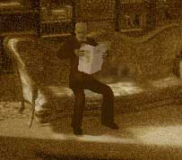

| 概要 | 地図 |
| 淡いヒント集 | ヒント集 | 的確なヒント集 |
| 攻略最短ルート |
| 場所選択に戻る |
夢の世界
|
止まった時間
工場へ移動したあなたは、ハンスがどこにいるかを突き止めることができるだろう。しかし、そこへ行くには鍵が必要である。そして、その鍵を持っている人物こそが、ハンスの居場所をあなたに教えてくれたはずだ。彼をこの場所から、工場へ行ってもらうには夢の世界の時間を動かさなければならない。あなたが、やらなければならないことは、 ・ハンスの居場所を突き止める ・ボラルバーグおじさんの出勤時間を調べる ・止まった時間を動かす ・動かした時計を使い、始業時間を告げるベルを鳴らす ということである。

・ハンスの居場所を知っているのは、ハンスの身内以外には考えられない。 ・ハンスの父である、ボラルバーグに聞けば教えてくれるだろう。 ・しかし、彼自身が自分の出勤時間までは教えてくれない。どうすればよいか?  
・時計は止まっている。 ・この時計は、振り子を動かすことによってゼンマイを回すものである。 ・上部の針の付いた時計と、中央部にある時計の時刻が違っている。 ・どちらかの時計を、どちらかの時間にあわせてみよう。今まで動かせなかった部分が、動くはずだ。 ・また、振り子が動いているだけでは、時間は動いていないことに注意して欲しい。
・時計が動いたら、ベルを鳴らせばよい。 ・ベルは、時計に付いているのが分かるはずだ。 ・後は始業時間を調べ、ベルを鳴らせばよい。ただし、夢の世界における時間が正しい方向へ進んでいればの話だが。 |
| 場所選択に戻る |
| 概要 | 地図 |
| 淡いヒント集 | ヒント集 | 的確なヒント集 |
| 攻略最短ルート |
Syberia II
| 目次へ戻る | ページの上部へ |